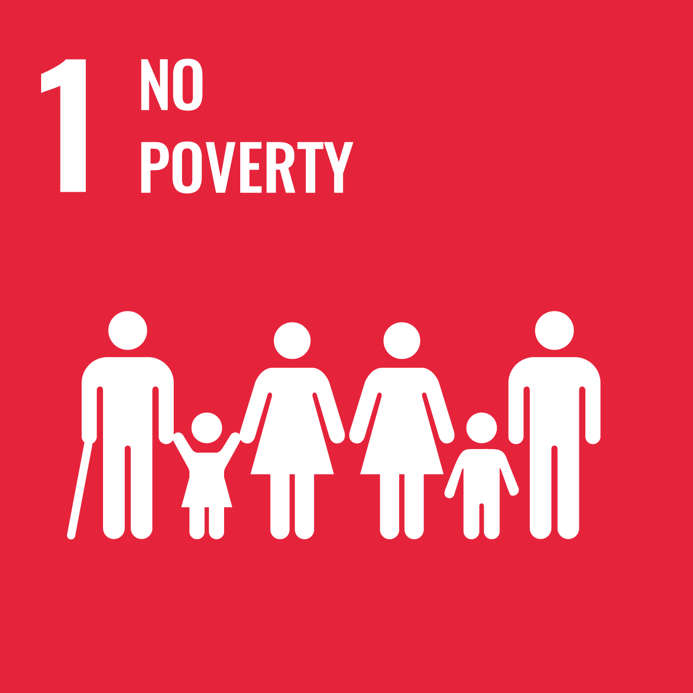
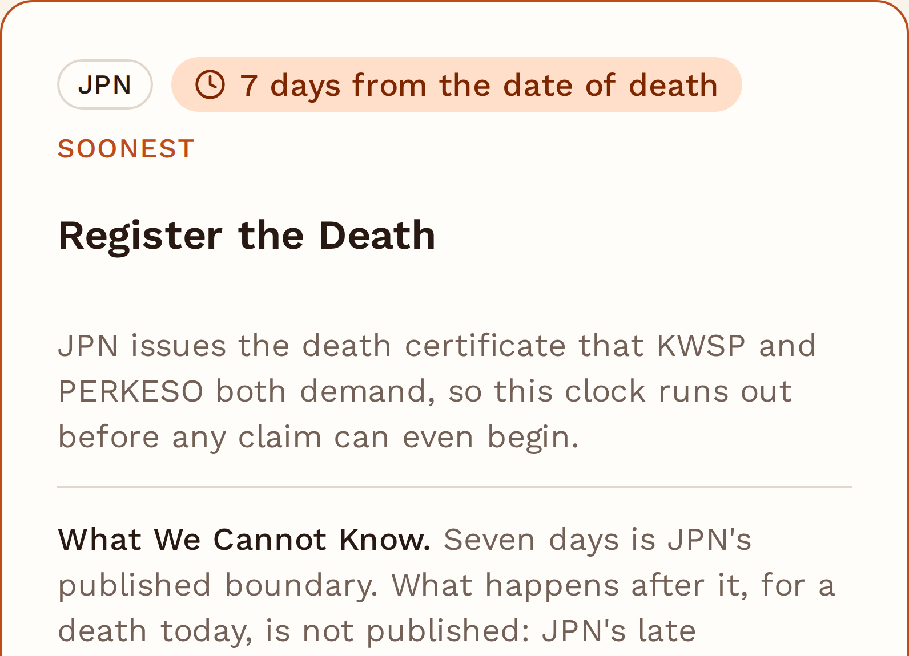
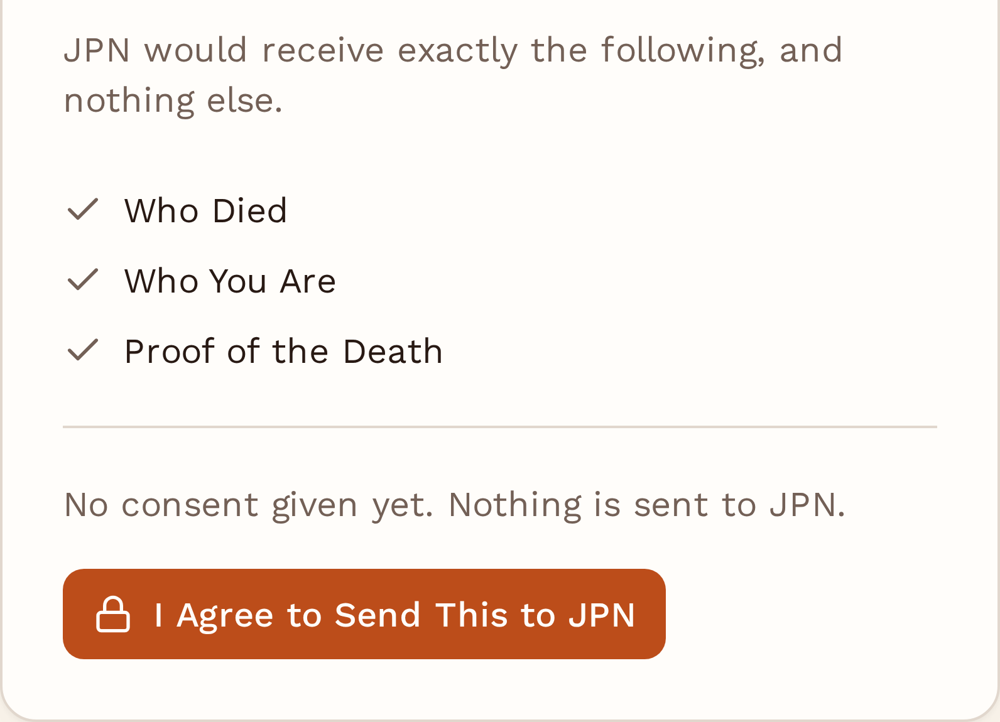
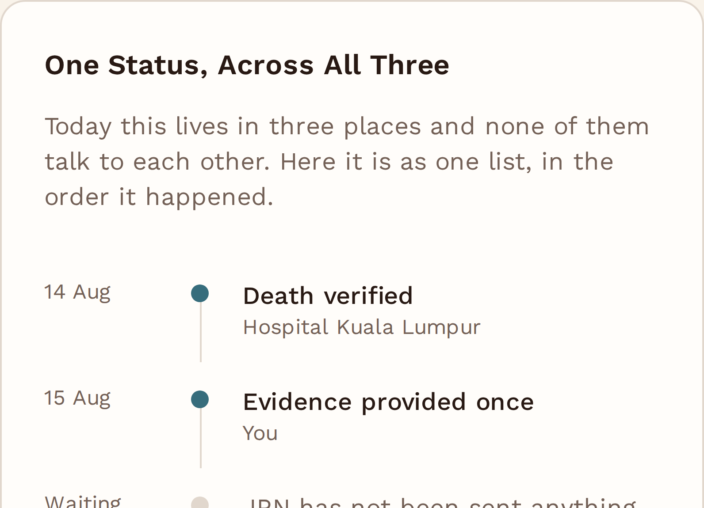

MyTakziah
MyTakziah
Grief is hard enough.
The paperwork shouldn't be.
Universiti Malaya
Asia Pacific University
Universiti Malaya
Asia Pacific University
UN Global Goals


MyTakziah
Team Survive
02 / 14The Problem
Meet Encik Saifulnizam. His wife died on 14 August.
He registered her passing at JPN on day one. KWSP and PERKESO must still be told, separately and in person.
- What his family may be owed
- Which deadline runs out first
- What he has to do next
- Where each of the three claims stands
The same five facts, each time.
Encik Saifulnizam is a fictional composite. Every form code and deadline beside him is taken from the agencies' own published pages.
In person, with the original documents. Form JPN.LM02. The published boundary is the seventh day.
Print form 9KM (AHL) and give the same five facts again, on paper. The Death Withdrawal page offers only a manual withdrawal.
In person again, with the originals, at a different counter. Borang 34, or Borang 24 and 26.
Tan Gek Hiang, a cleaner in Kuching, collected her PERKESO survivor benefits almost 23 years after her husband died. She had never been refused. Nobody had told her.
A real case, reported by The Borneo Post, 27 April 2017. Saifulnizam is a composite. She is not.
MyTakziah
Team Survive
03 / 14The Problem
The same five facts, demanded thirteen times.
Three agencies, three forms: JPN.LM02, KWSP 9KM (AHL), and Borang 34 or Borang 24 and 26. The same core information, demanded again each time.
| Demanded of the family | JPN | KWSP | PERKESO | Times |
|---|---|---|---|---|
| Who died | 3 | |||
| Who you are | 3 | |||
| Proof of the death | 3 | |||
| How you are related | 2 | |||
| Where to pay | 2 |
The barrier is not digital capability. The bereavement path was never built.
A KWSP member can update a nomination from the i-Akaun app, verified by e-KYC, without visiting an office.
The beneficiary is offered no equivalent. The only action on the Death Withdrawal page is a link to apply for a manual withdrawal.
PERKESO's relationship evidence is tiered. A family that is not spouse and children must produce documents about other people, out as far as the grandparents' identity documents.
Source: the published forms and claim checklists of JPN, KWSP and PERKESO.
MyTakziah
Team Survive
04 / 14The Problem
Three clocks start at the death. Only one is fully published.
Nobody tells the family they have started, and they run at very different speeds.
| Clock | The deadline | Deadline published? | Consequence published? |
|---|---|---|---|
| KWSP Death Withdrawal |
Six months from the date of death | Published | Published |
| JPN Registration of the death |
The seventh day after the death | Published | Not published |
| PERKESO Benefit claim submission |
Not stated. Only "tempoh masa yang ditetapkan", the stipulated period | Not published | Not published |
KWSP. Miss six months and the RM2,500 Death Assistance is lost.
JPN. Late Registration covers only deaths before 1 December 2011. Peninsular Malaysia has no Delayed procedure at all.
PERKESO. The checklist reserves the right to reject a late claim, without ever saying by when.
Two of the three enforce timing they do not publish.
A family cannot meet a deadline it cannot find.
late death registrations between 2019 and 2025. The boundary is published. Meeting it is a different problem.
"Due to the needs, circumstances, rituals, religious obligations and customs with regard to the management of a death that may prevent a qualified person from informing the death to the Registrar..."
Births and Deaths Registration (Amendment) Bill 2016
Parliament extended one deadline, at one agency. It never touched the journey.
MyTakziah
Team Survive
05 / 14Target User
The family member left to administer the death.
Most often an older spouse. The median age at death in Malaysia was 69.0 years in 2024.
They are connected. They are the age group least likely to transact with government online.
The barrier is the process, not the device. A better front door does not fix three separate in-person submissions of the same evidence.
Department of Statistics Malaysia: ICT Use and Access 2024, Vital Statistics 2025.
Desk research, not primary user research. Built from published agency requirements and national statistics. We do not present it as validation.
MyTakziah
Team Survive
06 / 14The Solution
A family should only have to tell government once.
The family gives its evidence once. The model reads it, structures it, and pre-fills the three agencies' forms against their published rules. It never decides eligibility.
The agency keeps every eligibility and approval decision. If the system is wrong, the cost is a correction, not a family's money.
Estate distribution, faraid and probate, banks, zakat, local burial. Version one covers Peninsular Malaysia; Sabah and Sarawak are phase two.
MyTakziah
Team Survive
07 / 14The Solution
The same week, with MyTakziah.
Saifulnizam's week, without and with. The right-hand column is what the five steps change.
| Without MyTakziah | With MyTakziah | |
|---|---|---|
| Finding out what you are owed | You do not, unless someone tells you | Told on day one, with the published rule beside each item |
| Giving ID and proof of the death | Three times, at three counters | Once |
| The forms | Three, blank, in his handwriting, at counters | Filled in already, on screen, for him to check |
| The deadlines | Clocks running, and nobody says so | Ranked, soonest first, counting down |
| If the family shape is unusual | He finds out he needs his in-laws' documents while standing in a queue | He gets the full list before leaving the house |
| Tracking it | Three reference numbers, three phone lines | One screen, three statuses |
Assume no agency ever agrees, and MyTakziah can only print forms Saifulnizam carries himself. Three things still change.
MyTakziah
Team Survive
08 / 14Innovation
A chatbot tells you what to do. MyTakziah does it.
Not a new technology. It is refusing to make a grieving family the integration layer between three institutions that already share infrastructure with each other.
Three forms, three counters, the same five facts. The family is the integration layer.
A dozen conditions across three agencies, every one traceable to a government page.
The six-month EPF window outranks a larger benefit with no deadline.
The family sees what each agency receives, and agrees to each on its own.
The model never decides eligibility. Being wrong costs a correction, not a family's money.
MyTakziah
Team Survive
09 / 14Innovation
Four fair challenges, four answers.
These are the questions a judge should ask, and the answers every member of Survive can give from memory.
JPN has already built that chatbot, with a death module. It still cannot tell KWSP anything.
They notify. We claim. Notification does not put money in a family's hands, or protect a deadline.
The Minister calls it purely verification and authentication. It is our foundation, not our competitor.
Twelve cities, against close to 199,000 deaths a year. At UTC Perak you still queue three times.
A member can nominate a beneficiary from a phone, verified by e-KYC, no office visit. The bereaved beneficiary is offered a form to print and carry. The capability exists. It stops at the member.
A shared roof is not a shared record.
MyTakziah
Team Survive
10 / 14Impact
Every death starts the same paperwork.
None of this is new money. It is already funded and already owed. The gap is whether a family knows to claim it in time.
deaths registered in Malaysia in 2024, up 1.0 per cent on 2023
in EPF death withdrawals in 2024, across 85,532 transactions
EPF Death Assistance, discretionary, lost if not claimed within six months
PERKESO funeral benefit at most: actual expenditure or RM3,000, whichever is lower
- Give the evidence once
- Know which deadline runs out first
- Fewer trips to a counter
- One status, not three
- Complete submissions, first time
- Fewer forms returned for correction
- Less chasing a family for documents
- Every approval decision stays theirs
- Reaches those least likely to transact online
- Money already owed reaches the family
- One life event proved, then the next
- A pattern other journeys can reuse
Core items re-entered per death
Claims inside the six-month EPF window
Submissions returned or rejected
In-person trips per death, today at least two
No baseline measured yet. These are the measures, not results.
MyTakziah
Team Survive
11 / 14Feasibility
Feasible today. Integration comes later.
Version one creates value without a single agency integration. Integration adds automation later, and is not required to prove the journey.
- Document extraction from the family's evidence
- A published-rules engine, a dozen conditions
- Pre-filled agency forms
- Consent controls, one per agency
- One status timeline
- Bereaved families
- JPN, KWSP and PERKESO
- Hospitals and death registrars
- A legal and privacy advisor
MyDigital ID, almost 10 million registrations, and MyGDX, 81 agencies across 49 systems. Both already built. Version one uses neither.
The model handles the paperwork. Published rules control the workflow. Families consent. Agencies keep every approval decision.
MyTakziah
Team Survive
12 / 14Visual Concept
One line, three agencies, one timeline.
The family appears once, at the start. The line never returns to them.



Live at mytakziah.vercel.app. A concept demo: no login, no real data, nothing ever marked approved.
MyTakziah
Team Survive
13 / 14Why Survive Should Win
A small team, and a deliberately small idea.
Our team combines strong technical expertise with product and business thinking.
Deliberately small: one life event, three agencies, published rules. Every figure carries a source, every limit is stated, and where we could not verify something we narrowed the claim.
MyTakziah solves a real Malaysian problem by turning one verified death and one set of evidence into a guided journey across JPN, KWSP and PERKESO. Its AI layer reads and structures family evidence, maps it to official agency requirements, and pre-fills the relevant forms. Families review and consent before anything is submitted, while agencies retain every final decision. The innovation is not another chatbot, but an AI-enabled life-event service that removes the family from being the integration layer between government agencies.
MyTakziah
Team Survive
14 / 14Thank You
Grief is hard enough.
The paperwork shouldn't be.
No one should have to carry the same documents to three different counters in the weeks after losing someone.
Five screens, no login, no real data.
mytakziah.vercel.app
two UN Goals
Team Survive · Anderson Ling, Hee Zi Jie, Wong Xuan Rui, Yow Li Hao
URIIS Student Biz Innov Challenge 2026, Track 02